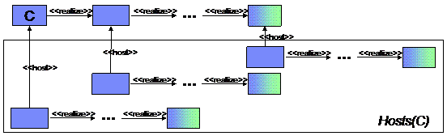

A realization link is a link between two objects of the same type. It expresses how a conceptual object is related to another object that realizes it. In practice, realization links can only exist between units, capabilities and requirements. Realization links between capabilities and requirements are valid only when there is a realization link between the containing units. In this case, they are required only when there is ambiguity in the mapping between capabilities or requirements. Because it is necessary in some cases, we should add the links in all cases.
Realization links will be stored only at the topology level.
Currently, the validation rules (below) do not consider meta data (except where explicitly mentioned).
units of type ConceptualNode are an exception. See below for the exception case.
By default, a realization link from a unit C to a unit U is valid if:
- Cis conceptual; that is C.isConceptual() is true; and
- The type of U is a subtype of C; and
-
For each capability c
on C there exists at least one
capability d on U
that matches according to the following rules:
- The type of d is a subtype of the type of c; and
-
For every (extended) attribute on capability c of C,
there exists a unique corresponding (extended) a' attribute
(of d) which matches a according to the following rules:
- The attribute names are the same; and
- the value of attribute a is null or it equals the value of attribute a'.
- For any two distinct capabilities c and c' on C there are distinct capabilities d and d' on U such that c matches d and c' matches d' as above.
- requirement r on C
there exists at least one matching requirement
s on U according to the following matching rules:
- The dmoType of s is a subtype of the dmoType of r; and
-
For each requirement
expression e on r there exists a matching
requirement expression
f on s according to the following rules:
- "attributeName" matches exactly; and
- "interpreter" matches exactly; and
- "value" matches exactly.
- For any two distinct requirement expressions e and e' on r there are two distinct requirement expressions f and f' on s such that e matches f and e' matches f'.
- For any two distinct requirements r and r' on C there are distinct requirements s and s' on U such that r matches s and r' matches s'; and
- For each extended attribute a on C there exists an extended attribute a' on U that matches according to the rules above (3.2); and
-
If unit C is hosted by
unit D, then
- FinalRealization(D) is not equal to FinalRealization(C); i.e., C is not D; and
- FinalRealization(C) is not in HostsR(D); i.e., D is not hosted on C; and
- HostsR(C) can contain at most one non-conceptual unit; i.e., there is at most one host.
-
For all units D such that
C hosts unit D, then
- FinalRealization(D) is not equal to FinalRealization(C); i.e., C is not D; and
- FinalRealization(D) is not in HostsR(C); i.e., C is not hosted on D; and
- HostsR(D) can contain at most one non-conceptual unit; i.e., C is hosted by at most 1 unit.
- For every requirement r on C such that r.getLink() is not empty, then TargetsR(r) can contain at most one capability on a non-conceptual unit; and
- For every capability c on C such that there is an r that depends on c; i.e., there is a dependency link from r to c, then TargetsR(r) can contain at most one capability on a non-conceptual unit; and
- FinalRealization(C) is not in GroupsR(C); i.e., C cannot be contained in itself; and
- FinalRealization(C) is not in MembersR(C); i.e., C cannot contain itself; and
- The non-conceptual members of GroupsR(C) satisfy the InCardinality requirements on unit C; and
- The non-conceptual members of MembersR(C) satisify the OutCardinality requirements on unit C.
By default, a realization link from a capability c to another capability d is valid if:
- There is a realization link from the unit containing c to the unit containing d; and
- c and d match according rule 3 above.
By default, a realization link from a requirement r to another requirement s is valid if:
- There is a realization link from the unit containing r to the unit containing s; and
- r and s match according rule 5 above.
The above rules use the following definitions.
Let C be a unit and realization(C) be the target of a realization link from C.
Define the realization set of C to be:
Realizations(C) = {C, realization(C), realization(realization(C), ...}.and FinalRealization(C) to be the unit F in Realizations(C) such that F has no realization.

Let host(C) as the unit hosting C; that is, the source of a HostingLink whose target is C. Define the realizations of hosts(C) as:
HostsR(C) = ∪Realizations(host(R)) where R is in Realizations(C).
Let r be a requirement of unit C and realization(r) be the matching requirement or realization(C).
Define the realization set of r to be:
Realizations(r) = {r, realization(r), realization(realization(r), ...}.and FinalRealization(r) to be the requirement s in Realizations(r) such that s has no realization.
Let target(r) to be the target capability of r.getLink(). Define the realizations of targets(r) as:
TargetsR(r) = ∪Realizations(target(s)) where s is in Realizations(r).
Let S be a set of units.
Define the realizations set of S to be the realizations of the set's members; that is,
Realizations(S) = ∪Realizations(M) where M is in S.
Let groups(C) be the set of groups of which C is a member. Define the realizations of groups(C) as:
GroupsR(C) = ∪Realizations(groups(U)) where U in Realizations(C).That is, the set of all groups (and their realizations) that contain C (or a realization of C) as a member.
If C is a group, let members(C) to be the set of members of C. Define the realizations of members(C) as:
MembersR(C) = ∪Realizations(members(U)) where U is in Realizations(C).That is, the set of all units (and their realizations) in group C.
See also this PowerPoint presentation for a more detailed presentation and explanation of the rules.
Conceptual nodes are treated as an exception. A conceptual node allows any other unit to be hosted on it regardless of its hosting requirements. To realize a conceptual node, the hosting requirements of all hostees must be satisified by the target unit.
Furthermore, if nothing is hosted on the conceptual node, it can be realized by any unit.